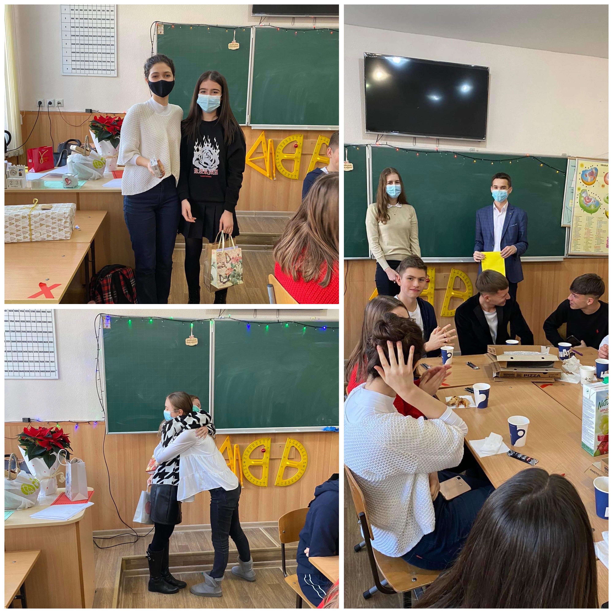
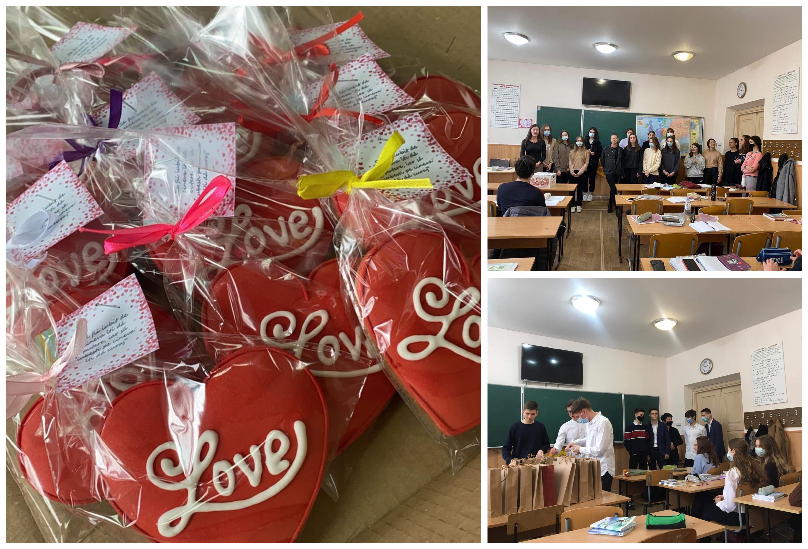
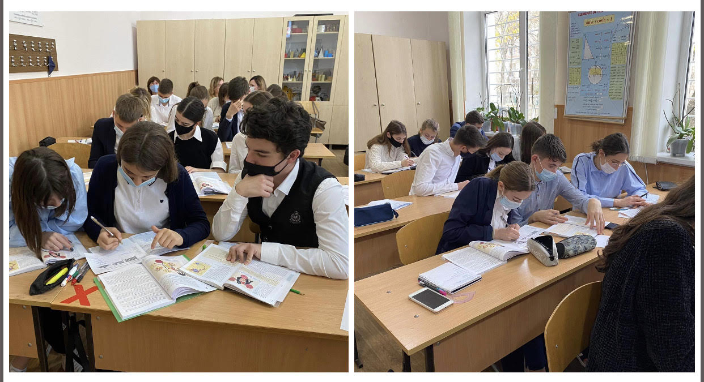

TRADIŢII ÎN CLASA NOASTRĂ
La final, am decis să enumerăm câteva tradiții din clasa noastră! Deși suntem o clasă formată anul acesta, suntem nespus de bucuroase că ne-am apropiat cu toții într-un timp scurt. Este surprinzător faptul că doar în
câteva luni am reușit deja să avem și tradiții. Sperăm să le păstrăm și pe parcursul următorilor ani de liceu, poate și după absolvirea lui!
 SECRET SANTA
Secret Santa înseamnă Moș Crăciun Secret, iar tradiția vine din occident,
acolo unde este păstrată încă de mulți ani, dar care a ajuns să fie foarte folosită în întreaga lume. Fiecare participant a avut un nume al unui coleg, iar acestuia a trebuit să îi ia un cadou de Moș Crăciun,
însă aici iar a intervenit o ”serie de mici probleme” deorece a trebuit să ne gândim bine la ceea ce a urmat să cumpărăm pentru persoana respectivă!
 DRAGOBETE ȘI 8 MARTIE
Cu ocazia sărbătorii Dragobete, fetele au fost cele care au surprins băieții cu un mic cadou dulce! Băieții la rândul lor, cu ocazia sărbătorii de 8 Martie au felicitat dragele lor colege. Să fim sincere, credem că a fost frumos.
 AJUTORUL RECIPROC
Unii nu ar considera ajutorul reciproc ca pe o tradiție propriu-zisă, în clasa noastră această "tradiție" este respectată cu sfințenie. Fiecare ajută cum poate și cu cât știe!